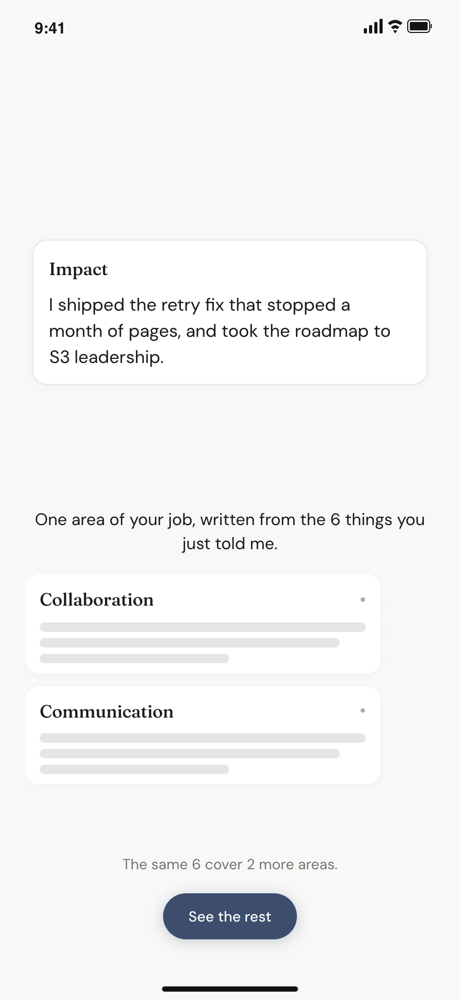
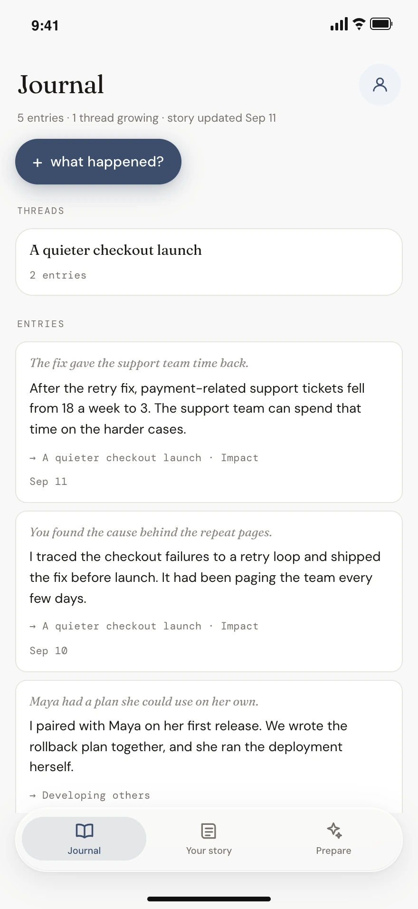

I build risk products and AI workflows at Capital One. I also built and launched Advocate, an AI career journal for iOS that drafts performance reviews from your work notes.
Outside of work, I’m usually keeping up with tech, Cybercab-spotting, or wondering how close we are to JARVIS (and planning my next snowboarding trip).
Enforce the NCR information barrier before reasoning.
I defined source boundaries around Operator, Participant and Horizontal roles, giving auditors an upstream control to inspect instead of reconstructing influence on every response.
Data sources, access policy & evaluation
Read the AI risk case studyClose case study
Enforce the information barrier before AI reasoning.
AI risk assistant · In development
Risk advisors need source information to complete an assessment. Network Conflict Risk (NCR) makes separation between business roles a critical information barrier. Selected by VP leadership, I work on an AI assistant’s sources, access policy and response evaluations.
The problem
Information outside an advisor’s permitted source groups must not shape the AI’s reasoning, even when the final answer looks acceptable.
My decision
I defined an ingestion policy to exclude ineligible sources before they become AI context. It determines which source groups each role can use.
Where it stands
In development. The ingestion policy is defined; I’m also working on source selection, read/display permissions and response evaluations.
Audit the boundary where information enters.
For NCR, hiding information in the final answer is insufficient: it must not influence the wrong role’s reasoning. The policy gives auditors the source boundary itself to inspect.
RoleEligible source groups
Operator
Operator+Horizontal
Participant
Participant+Horizontal
Horizontal
All three source groups
Source dataNCR boundaryAI reasoning
Only that role’s eligible sources become AI context.
Conceptual role-source policy · No production data
Check the sources, permissions and answers.
Sources
Choose ingestion sources around the context risk advisors need for an assessment.
Access
Define read and display permissions separately, including confidential records.
Evaluation
Contribute to reference examples and response evaluations that surface failure modes.
I built and launched Advocate on iOS. It tracks wins as they happen and keeps your review story ready around what matters in your role, with the original work one tap away.
Actual app · Sample data
ADVOCATE · INTERACTIVE WALKTHROUGH
Source note 1 · exampleTry a note below ↓
1Moved custom reporting to Release 2 so assessment scoping could ship in the first release.
Captured the release decision and its tradeoff, with the original note kept as its source.
mon · 9:14 AMProduct judgment
Cited story
1Protected the first release by sequencing scoping before custom reporting.
Example walkthrough. Added notes stay in this session; the iOS app creates stories with AI.
I built and launched Advocate, an AI career journal for iOS that tracks your wins and keeps your review story ready. It organizes your work around what matters in your role, using your company’s criteria or the evaluation areas you choose. Original notes stay one tap away.
The problem
Advocate gets more useful as you journal, but journaling is a habit that takes time to build. People shouldn’t have to build that habit just to understand the payoff. How could I show that value on first open?
My decision
I added Instant Case to show the value from one work ramble. With richer context, it generates a claim tied to a competency. With less, it creates a note reflecting what it understood and invites one more detail, without forcing a match. Both happen on the fly.
What shipped
I built and launched the iOS app independently, then added Instant Case onboarding. I owned product, design, development and early distribution.
Show the value from one work ramble.

A fuller ramble produces a claim tied to a competency, generated on the fly.Actual app · Sample data
Make the story fit the job.
People can choose evaluation areas or use their company’s own criteria, so the draft reflects what their role is actually assessed on.
Keep wins easy to capture.
I paired voice capture with smart daily and weekly reminders, tailored to when each person is most likely to journal.
Catch wins while they’re fresh.

Journal keeps work notes and their connected threads together as your story grows. Current app UI with sample data.
From 28%92%Design compliance Audited against component specs Four pilot codebases
One UI spec across four codebases.
I defined the agent workflow and guardrails for a four-person, two-week pilot.
Read the Surge case studyClose case study
The problem
The same components differed across codebases. Business and risk context moved between navigation and record content; colors and actions also varied.
My decision
Audit differences, then align code to a shared spec. I defined the agent workflow and guardrails. The auditor found the differences; the spec generator defined shared components; the implementation agent aligned the code.
The result
Design compliance moved from 28% to 92% across four pilot codebases. People reviewed each pass; the pilot led to a dedicated adoption team.
What the percentage measures. The auditor checked implementations against our component specs: token usage, layout and consistency across component implementations. The 28% → 92% result reflects those findings across four pilot codebases.
From audited differences to a shared component.
The left-hand rail is one example: the auditor found differences between these surfaces, the spec generator defined a shared rail component, and the implementation agent aligned the code to that spec.
Surface A
Context
Business entity Risk
ActionsView recordEdit details
Record details
Surface B
ActionsOpen recordMore actions
Record details
Business entity Risk
Shared rail
Context
Business entity Risk
ActionsView recordEdit details
Record details
Business entity is the parent; Risk sits beneath it.
Give every surface the same actions.
A shared rail component defined by the spec generator.Reconstruction of the audited differences; labels and target styling are illustrative.
Design compliance
92%from 28%
across four pilot codebases
Audit + code changes
<1day
excludes review & deployment
Pilot coverage
4/4
codebases tested
Scope and review
Agents could change the UI, while deep API logic stayed outside scope and people reviewed every pass.
The four-codebase pilot gave leadership enough evidence to assign a dedicated team to wider adoption.
Agents make UI changes. People approve each pass.
Write the specGeneratorDispatch the workOrchestratorFind the driftAuditorRepeat×nMake allowed fixesImplementerReview & sign offHuman review
Agents do the passes; people set the boundaries. Follow a pass through the workflow.
PLAExpand eligibility without deactivating valid risks.
Process Level Assessments · Post-launch repair
Assessors choose which risks need checks before reviewing a process. After PLA launched, one business group couldn’t select the higher-level (parent) risks its reviews needed: the agreed rules didn’t fit its business hierarchy.
What users needed
Expand eligible parent risks to both divisional and business-unit levels, removing the taxonomy filter.
Constraint and response
Methodology partners rejected removing every restriction. I kept the remaining rules explicit as requirements evolved.
The result
In under two weeks, the business could select the required risks and scope its assessments accurately.
I clarified each revision and coordinated three logic rebuilds in under two weeks as stakeholders changed requirements. My scope included the automatic updater, where a wrong change could deactivate valid risks.
Before: needed risks unavailable.
The agreed eligibility filters excluded risks this business needed for its assessment.
After: both hierarchy levels supported.
Divisional parent risks
Business-unit parent risks
Risk-classification (taxonomy) filter removed.
Keep the updater from deactivating valid risks.
Changing eligibility also affected which diagnostics a parent risk could sit under and how the automatic updater handled it. The work included:
Dependency tracing. We traced how eligibility and diagnostic placement affected the automatic updater.
Logic rebuild. We unwound the existing diagnostic-placement logic and rebuilt it as stakeholder requirements evolved.
Deactivation checks. We retested the logic and updater together to prevent unintended automatic risk deactivation.
LAUNCHShip scoping first. Move reporting to Release 2.
Earlier · Capital One · Shared assessment platform
LAUNCH brought more than 300 annual risk assessments out of separate tools and into a shared platform. I led scope and delivery decisions with methodology and engineering partners.
The constraint
Regulatory deadlines were fixed. Leadership wanted custom reporting in the first release, while every downstream page depended on the scoping module.
My decision
I prioritized scoping and moved reporting to Release 2. Scoping consolidated data across platforms and gave the other pages their foundation.
What shipped
Scoping shipped on time. Question Bank shipped a month ahead of a six-month plan, and the platform was adopted across teams.
Scoping was the prerequisite. Reporting could wait.
ScopingConsolidate assessment data
Downstream assessment pagesDepend on that foundation
Custom reporting → Release 2. I deferred it so the prerequisite could meet the first-release deadline.
My scope also covered Question Bank, diagnostics and standardized Camunda workflows. I owned the business-process model and delivery decisions.
Teams onboarded
10+
Question Bank adoption
Teams expressing interest
50+
after the SECON demo
New platform tenants
3
as the platform scaled
Selected from hundreds of applications to present at SECON, I had 150+ conversations and onboarded three new tenants.
“His thoughtful, customer-first approach was instrumental in getting that work pushed through.”— Drew Magyar, Product Team
How I think.
My bet is that agents will let one person take more of a product from idea to launch. Broader ownership puts more weight on judgment: what to build, what to delegate, and where human review belongs. Building Advocate and piloting the Surge workflow are how I’m working through those questions.
That judgment shows up in small choices, too. Muse’s suggested ideas offer a starting point before you know what to ask. Apple Pay’s checkmark makes it clear when you’re done. Those details shape how I build: help people discover what a product can do, make progress clear, and leave them confident about what happens next.
From the people I work with.
01 / 05
Where I've been.
2023 — NOW
Product Manager Promoted 2025
Capital One
Agent workflows, guardrails, and data access for risk products. Mentored three associate PMs through their first year.
2022 — 2023
Product Manager
Warner Bros. Discovery
Delivered the unified HR portal during the $43B merger.
Mar–Sep 2021
Disaster Recovery Project Manager
Six-month career experience
Apple
Coordinated 30+ application teams off a legacy warehouse with zero disruption through Apple events.
Apple Retail · 2018–2022
Technical Specialist → Expert → Genius
Two promotions to Apple’s top in-store technical role.
Off the clock.
Friends and teammates come to me for tech advice and news—especially Apple and Tesla. Away from a screen, it’s film, snowboarding, and probably another theory about Severance.
Masjid an-Nabawi, Medina
A photo I almost overlooked.
I took this Masjid an-Nabawi frame mid-walk in Medina and didn’t think much of it until a small crop brought it to life. I submitted it to Capital One’s MENA Art Exhibit; it was selected and displayed at headquarters for a month.
Venice canals, last light
Dusk over Manhattan Beach
01 / 03
A few records I come back to.
Choose a sleeve to put a record on.
G / A
Nothing on the platter
30-second previews · Apple Music
Other things I’ve built.
At fifteen, I was customizing hoverboard specs with suppliers in Shenzhen and jailbreaking classmates’ iPhones.
2016
My first game on the App Store, at sixteen. I sold jailbreak tweaks before that.
2025
Tape, an AI trading journal. I rebuilt the insight engine three times. Raw notes beat aggregates. In TestFlight.